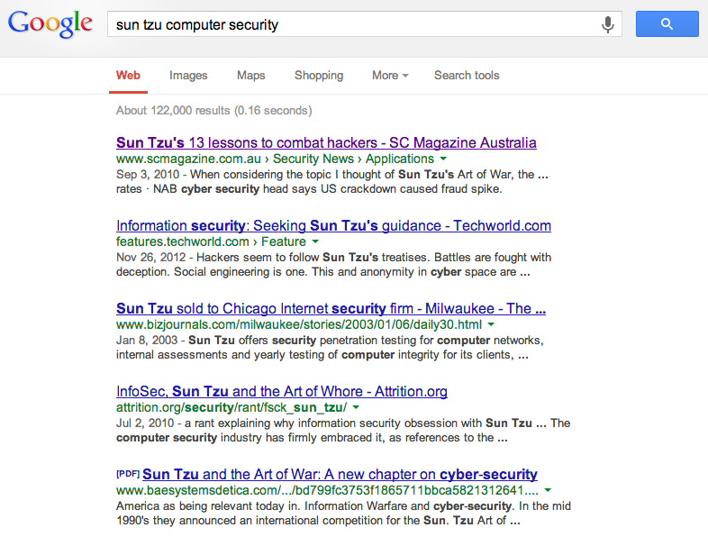
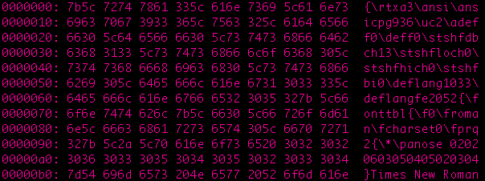
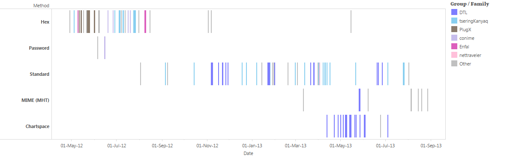
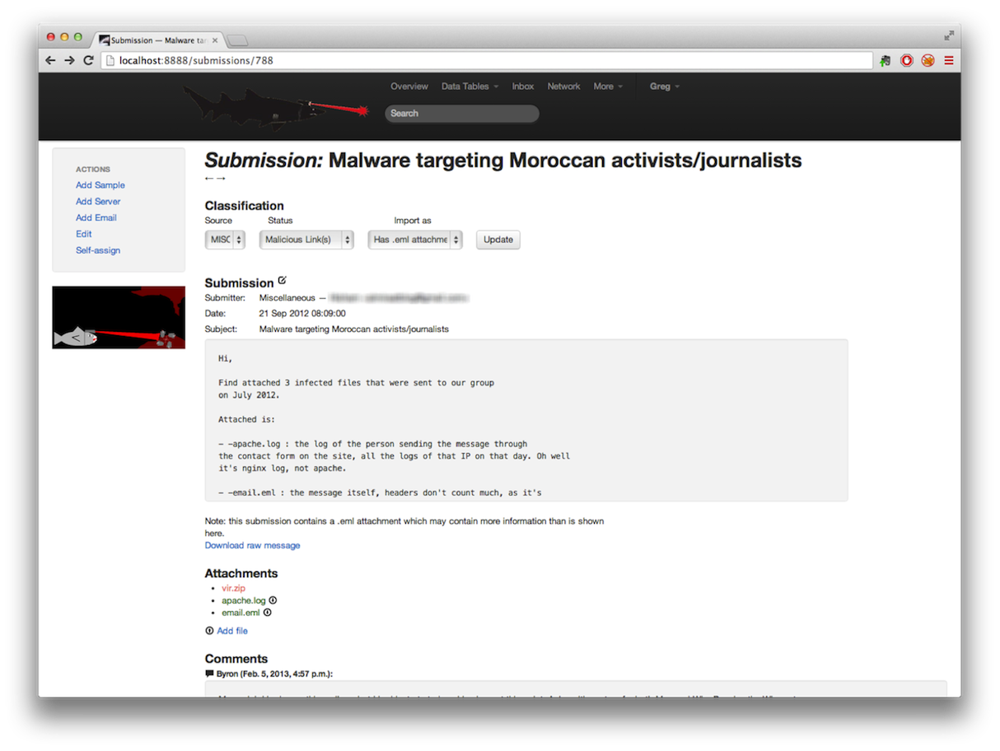
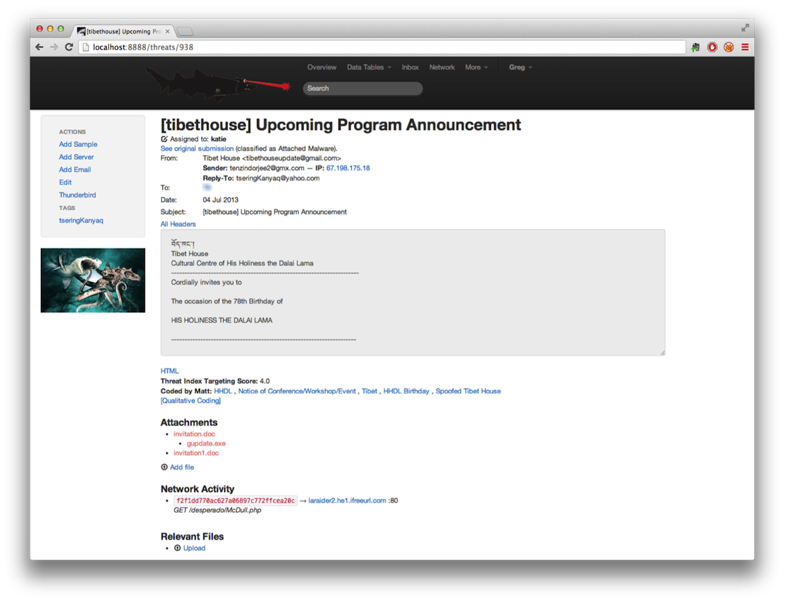
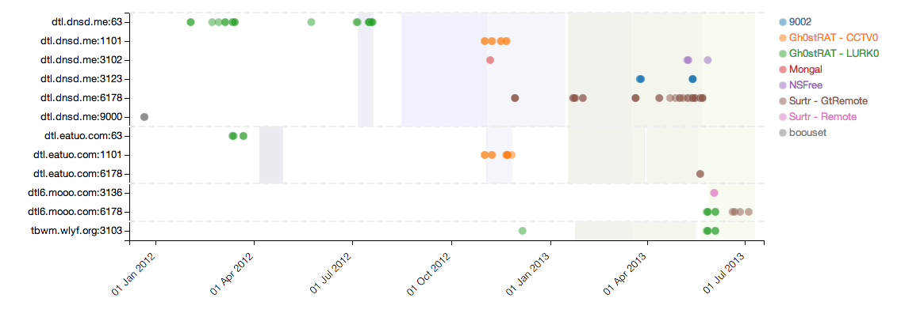

RATastrophe
Monitoring a Malware Menagerie
Who are we?
Seth Hardy
Katie Kleemola
Greg Wiseman
Munk School of Global Affairs
University of Toronto
Background
Comparison of Targeted Threats against Human Rights Organizations Research Project
Limited visibility: only participating organizations, only what they send
Looking primarily at highly targeted attacks and already compromised targets
Not writing AV detection - although perhaps NIDS signatures
Previous Research
From the Targeted Threats project:
IExplore/Sharky RAT (2011)
Mac Malware (2012)
Primarily focused on Tibetan civil society organizations
Multiple names on Mila’s APT spreadsheet
What is an APT?
THREAT ATTRIBUTION
Obligatory Sun Tzu Quote
"It is said that if you know your enemies and know yourself, you will not be imperiled in a hundred battles; if you do not know your enemies but do know yourself, you will win one and lose one; if you do not know your enemies nor yourself, you will be imperiled in every single battle."

THREAT
ATTRIBUTION
Contextual information often overlooked
How do we do this?
Look for the smoking gun
Cluster and make connections
Technical: vulnerabilities, malware families, infrastructure
Contextual: people (targeted and spoofed), organizations
REGIONAL OVERVIEW
Middle East
Syria
Fake Skype tools (e.g. encryption plugins)
Fake hacking/DDoS tools
Public RATs
DarkComet
XTreme RAT
Iran
Fake censorship circumvention tools
njRAT posing as Psiphon, distributed by Farsi file-sharing sites
Lower technical sophistication
Higher degree of “compromise and own” and social engineering
Tibet/China
Mostly document malware
Same CVE's are used
CVE Timeline
Minimizing AV Detection
Protip
Modify the RTF header

Word will still open them but
fewer AV engines will detect them
Disguising CVE-2012-0158
Recall
CVE-2012-0158 is the still the most commonly used vulnerability used against Tibetan groups despite being fixed in April 2012
CVE-2012-0158 typically uses the ListView, ListView2, TreeView or TreeView2 ActiveX controllers
How to mask the use of vulnerable ActiveX controllers?
Trick 1:
Encode the ActiveX controller name
Trick 2:
Find a less commonly known feature to exploit the same vulnerability
Trick 3:
Disguise the document
Antivirus definitions are often updated to recognize these tricks
CVE-2012-0158 Timeline

How do we process all the samples we receive?
System for the Holistic Analysis of RAT Kings
Methodology
Submission Classification

Imported Email

Sample Metadata
Regex Filterable List Views
Interactive Visualizations
Export to other analysis tools
Filters to only export desired slice of dataset
GEXF for Gephi
CSV for Maltego, Excel, etc.
Future Plans
More automated workflow
Integration with Cuckoo Sandbox
Network traffic import from pcaps
Built-in interactive node-link visualizations
Improved change tracking / auditing
Open source
Clustering
Definition
RAT King:
A series of C2's intertwined by RATs
Example
"DTL Guys"
Observe
Four domains resolve to same IP
C2's for six different malware families
But mostly LURK0/CCTV0 and Surtr
LURK0 & CCTV0
Gh0stRAT based
Named for five character header in communications
Standard RAT functionality
Active development over the past two years
At first...
Internal name: "Butterfly.dll"
Then a break...
Internal name: "ETClient.dll"
Features added:
Padding with extra data
Larger file size to avoid AV heuristics
Different hash every time
Upgrade zlib version used for encrypting communication
Change persistence mechanism
Add configuration file
Change the five character header from 'LURK0' to 'CCTV0'
Samples of the same family but not using this C2 cluster often haven't followed the same development branch
and have differences in internal identifiers and functionality
but trying to track this is time consuming and tedious
Aside: Researchers give malware much cooler names than their authors do
Surtr
Unsurprising... standard RAT functionality
Immediately downloads a stage 2 component allowing for easy updating
Similar campaign codes and config files as LURK0/CCTV0
Uses zlib to encrypt network traffic
Pads resource section to make file larger
Spiritual successor to LURK0/CCTV0

Clustering based on obvious shared infrastructure
But looking at the development path
of the malware families used we can
try to guess non-obviously related campaigns...
TseringKanyaq
Very easy cluster to spot via contextual analysis
Reply-To: {tseringKanyaq,d.kanam}@yahoo.com
Often spoofs Tibetan Women’s Association or other real organizations
First seen May 4, 2012
Last seen July 4, 2013
THREE WOLF REPLY-TO:

Infrastructure Clustering
Uses three domains for sending email
163.com : May 4, 2012 - July 9, 2012
myopera.com : July 24, 2012 - September 5, 2012
gmx.com : October 14, 2012 - present
No overlap - moves from one to the next
Vulnerabilities
CVE-2012-0158
The best thing since CVE-2010-3333!
And Mac users?
CVE-2009-0563, CVE-2012-0507
None of these stand out for Tibetan attacks
Malware Families
Windows:
Shadownet & Duojeen
Remember Lucky Cat?
Mac:
PubSab
Shadownet
Persistence via WMI - fairly unusual
Very inconsistent technical sophistication
Some attacks use UAC elevation
Some attacks are just completely broken
No clear sign of active development on any malware family
Repurposing, as opposed to development?
C2 Infrastructure
Disposable infrastructure:
free hosting providers
mostly .com and .info, but also .in and .gg
some Tibetan-themed names
C2 Infrastructure
Threat clustering and attribution most clear from contextual analysis
Vulnerabilities and exploits very similar to many others
Knowing how targeted organizations and (real, impersonated) people are related assists with analysis
In this case it was easy to know where to look with Reply-To: headers
Many times this information is really obvious in retrospect, but hard to find when processing large amounts of data
Targeted Threat Index
A metric for assigning an overall threat ranking score to email messages that deliver malware
Measures both contextual and technical targeting complexity
Measuring the sophistication of targeted attacks is complicated, due to contextual familiarity needed
Intended for use in prioritizing analysis and understanding severity and danger of targeted threats
TTI METRIC
The TTI score is calculated in two parts:
(Targeting Sophistication Base Value) * (Technical Sophistication Multiplier) = TTI Score
Base value is 0 - 5
Technical multiplier is 1 - 2
Overall score is 0 - 10
0 is reserved for non-targeted threats, e.g. spam
TARGETING SOPHISTICATION
| Value | Description |
| 0 | Not targeted (spam, financially motivated) |
| 1 | Targeted but not customized (looks fake) |
| 2 | Targeted and poorly customized (may look questionable) |
| 3 | Targeted and customized (may use a real person, organization, content) |
| 4 | Targeted and well-customized (likely directly addresses recipient or send from a compromised account, can be externally verified |
| 5 | Targeted and highly customized using sensitive data (likely from a separate compromise) |
Higher scores rely on detailed knowledge of the recipient
Identity, interests, and trust networks
Very frequently use knowledge from a separate compromise
Content and presentation strongly matter
Sender identity (email address and name) also very important
Need contextual knowledge to assess this
TECHNICAL SOPHISTICATION
| Value | Description |
| 1 | No code protection (packing, obfuscation, anti-reversing |
| 1.25 | Simple code protection (one method from above) |
| 1.5 | Multiple simple code protection techniques, or memory-only decryption |
| 1.75 | Simple code protection with at least one advanced protection method (rootkit, virtualized packer) |
| 2 | Multiple advanced protection techniques, appears designed by a professional software engineering team |
Almost all samples we've analyzed score 1.5 or less
Notable exceptions: FinFisher, DaVinci RCS
1.25 seems to be the sweet spot of least resistance
No need to go overboard...
1.5 becoming more common as attack tools are developed
PlugX, Surtr
RECOMMENDATIONS
Contextual and technical analysis for cluster identification
Threat data collection system
Need something beyond MD5s, domain names, and IPs
TTI metric for ranking and prioritizing threats
Monitoring threats under active development
Knowing how to catch it now will help with catching it later
And it means the attackers are invested!
...AND SOME DONT'S
Cluster identification is not the same as actor attribution
State-sponsored, state-supported, state-suggested, state-overlooked?
"Offensive defense" and "strike back policy"
Are you absolutely sure you know who you're dealing with?
...and even if you do, what then?
ALSO, STOP OPENING ATTACHMENTS
we all know what happens when you open the box
TARGETED THREATS REPORT
Citizen Lab will soon be releasing all of our findings, including those described here, in a full report: Comparison of Targeted Threats Against Human Rights Organizations
This will include technical details as well as contextual
MD5s, C2 IPs, domain names, malware families
Descriptions of spoofed individuals, organizations, and their trust relationships
Check out citizenlab.org
or follow @citizenlab
Or you can follow us individually:
@thirdson
@katharineaudrey
@wisemang
If you want to read about rabbit psychology, flamethrowers and parenthood.
QUESTIONS?